리눅스마스터-1급 (2022-03-12 기출문제)
1과목: 리눅스 실무의 이해
1. 다음 설명에 해당하는 파일로 알맞은 것은?
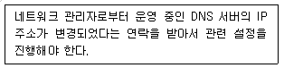
- /etc/hosts
- /etc/sysconfig/networks
- /etc/resolv.conf
- /etc/named.conf
(정답률: 37%)

2. 다음 중 프로토콜 데이터 단위를 OSI 7 모델의 하위 계층부터 상위 계층 순으로 올바르게 나열한 것은?
- bit → frame → packet → segment
- bit → frame → segment → packet
- bit → packet → frame → segment
- bit → segment → frame → packet
(정답률: 46%)
3. 다음 중 IPv4 주소 체제에서 B클래스에 속하는 사설IP주소 대역으로 알맞은 것은?
- 171.16.0.0 ~ 171.31.0.0
- 171.16.0.0 ~ 172.31.0.0
- 172.16.0.0 ~ 172.31.0.0
- 173.16.0.0 ~ 173.31.0.0
(정답률: 55%)
4. 다음 그림에 해당하는 명령으로 알맞은 것은?
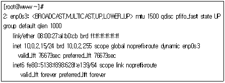
- ip
- ifconfig
- route
- ss
(정답률: 54%)
5. 다음과 같은 조건일 때 설정되는 게이트웨이 주소값으로 알맞은 것은?
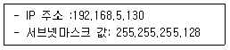
- 192.168.5.126
- 192.168.5.127
- 192.168.5.128
- 192.168.5.129
(정답률: 25%)
6. 다음 그림에 해당하는 명령으로 알맞은 것은?
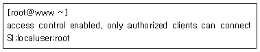
- xhost
- xauth
- xrandr
- xmodmap
(정답률: 30%)
7. 최근 실행한 명령 중에서 ‘al'이라는 문자열이 들어간 명령을 찾아서 재실행하려고 할 때 가장 알맞은 것은?
- !al
- !?al?
- !!al
- history al
(정답률: 26%)
8. 다음 (괄호) 안에 들어갈 내용으로 알맞은 것은?
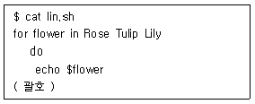
- od
- rof
- eof
- done
(정답률: 40%)
9. 다음 중 할당된 번호 값이 가장 큰 시그널로 알맞은 것은?
- SIGTSTP
- SIGKILL
- SIGTERM
- SIGQUIT
(정답률: 17%)
10. 다음 중 포어그라운드 동작 중인 프로세스를 백그라운드로 전환하는 방법으로 알맞은 것은?
- [Ctrl]+[c]를 눌러 작업을 일시 정지시킨 후에 fg 명령을 실행한다.
- [Ctrl]+[c]를 눌러 작업을 일시 정지시킨 후에 bg 명령을 실행한다.
- [Ctrl]+[z]를 눌러 작업을 일시 정지시킨 후에 fg 명령을 실행한다.
- [Ctrl]+[z]를 눌러 작업을 일시 정지시킨 후에 bg 명령을 실행한다.
(정답률: 49%)
11. 다음 설명에 해당하는 프로세스 간 통신 방법으로 알맞은 것은?
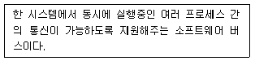
- Shared Memory
- Message Queue
- Desktop Bus
- Semaphore
(정답률: 27%)
12. 다음 중 10GB 용량의 하드 디스크 6개를 이용해서 RAID-5를 구성했을 때 실제 사용할수 있는 용량으로 알맞은 것은?
- 30GB
- 40GB
- 50GB
- 60GB
(정답률: 34%)
13. 다음 중 ssh 데몬을 시스템 부팅 시에 구동되도록 설정하는 명령으로 알맞은 것은?
- systemctl start sshd
- systemctl enable sshd
- systemctl is-enabled sshd
- systemctl is-active sshd
(정답률: 40%)
14. 다음 중 시스템 부팅 시에 X 윈도 모드로 부팅이 되도록 설정하는 명령으로 알맞은 것은?
- systemctl get-default multi-user
- systemctl set-default multi-user
- systemctl get-default graphical
- systemctl set-default graphical
(정답률: 24%)
15. 다음 중 CentOS 7버전에서 GRUB 환경 설정 파일을 수정한 후에 변경된 내용을 저장하기 위해 사용하는 명령으로 알맞은 것은?
- grub
- grub2-mkconfig
- grub2-install
- grub2-probe
(정답률: 40%)
16. 다음 설명에 적합한 리눅스 배포판으로 가장 알맞은 것은?
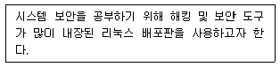
- Kali Linux
- Rocky Linux
- Arch Linux
- Ubuntu
(정답률: 40%)
17. 다음 중 리눅스 탄생의 모델이 된 미닉스 (MINIX) 운영체제를 개발한 인물로 알맞은 것은?
- 빌 조이
- 데니스 리치
- 리처드 스톨먼
- 앤드류 스튜어트 타넨바움
(정답률: 17%)
18. 다음 설명에 해당하는 운영체제의 기술로 알맞은 것은?
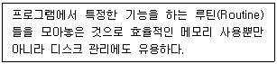
- 스왑
- 파이프
- 리다이렉션
- 라이브러리
(정답률: 37%)
19. 다음 중 2차적 저작물 소스 코드의 비공개가 불가능한 라이선스로 알맞은 것은?
- MPL
- MIT
- Apache
- BSD
(정답률: 20%)
20. 다음 설명에 해당하는 프로그램으로 알맞은 것은?
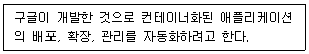
- Docher
- Ansible
- OpenStack
- Kubernetes
(정답률: 27%)
2과목: 리눅스 시스템 관리
21. 다음 설명에 해당하는 작업을 위해 관리자가 설치해야 할 프로그램으로 알맞은 것은?
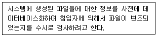
- PAM
- GnuPG
- Tripwire
- Nessus
(정답률: 17%)
22. 다음 중 백업하는 명령어와 복원하는 명령어가 다른 백업(Backup) 프로그램으로 알맞은 것은?
- dd
- dump
- cpio
- rsync
(정답률: 24%)
23. 다음 중 시스템 보안 관리 강화를 위한 조치로 틀린 것은?
- 불필요한 서비스를 최대한 제거한다
- /etc/issue와 같은 메시지 파일을 제거한다
- Set-UID와 같은 특수 권한 사용을 권장한다
- 로그인 서비스는 telnet 대신에 ssh를 사용한다
(정답률: 30%)
24. 다음 중 일반 텍스트 형식으로 저장되어 있어서 편집기로 내용을 확인할 수 있는 로그 파일명으로 알맞은 것은?
- /var/log/secure
- /var/log/lastlog
- /var/log/wtmp
- /var/log/btmp
(정답률: 20%)
25. 다음은 tar 명령어로 사용자의 홈 디렉토리 영역인 /home 디렉토리를 증분 백업하는 과정의 일부이다. ( 괄호 ) 안에 들어갈 옵션으로 알맞은 것은?
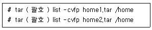
- -n
- -N
- -C
- -g
(정답률: 20%)
26. 다음은 cpio 명령을 이용해서 /home 영역을 백업(Backup)하는 과정이다. ( 괄호 ) 안에 들어갈 내용으로 알맞은 것은?
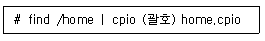
- -icv >
- -icv <
- -ocv >
- -ocv <
(정답률: 14%)
27. 다음 설명에 해당하는 로그 파일명으로 가장 알맞은 것은?
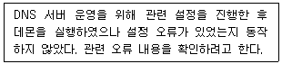
- /var/log/messages
- /var/log/xferlog
- /var/log/boot.log
- /var/log/secure
(정답률: 27%)
28. 다음은 로그 로테이션 설정 파일의 일부이다. 관련 설명으로 틀린 것은?
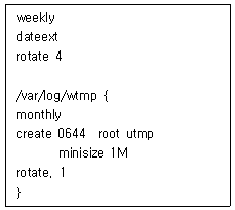
- 일반적인 로그 파일들은 1주일 단위로 로테이션이 진행된다.
- 일반적인 로테이션 파일들은 ‘파일명.1’, ‘파일명.2’ 등의 형식으로 총 4개가 생성된다.
- /var/log/wtmp 파일의 로테이션 파일은 1개만 생성된다.
- /var/log/wtmp 파일 크기가 1MB가 되면 지정된 기간 이전이라도 로테이션이 진행된다.
(정답률: 14%)
29. 다음 중 로그 설정 파일에서 가장 심각한 수준에 해당하는 priority로 알맞은 것은?
- error
- emerg
- crit
- alert
(정답률: 23%)
30. 다음 중 외부에서 오는 ping에 대한 응답을 거부하도록 설정하는 명령으로 알맞은 것은?
- sysctl -w net.ipv4.icmp_echo_ignore_all=0
- sysctl -w net.ipv4.icmp_echo_ignore_all=1
- sysctl -n net.ipv4.icmp_echo_ignore_all=0
- sysctl -n net.ipv4.icmp_echo_ignore_all=1
(정답률: 14%)
31. 다음 중 System V 계열에 속하는 프린터 명령어로 틀린 것은?
- lp
- lpr
- lpstat
- cancel
(정답률: 17%)
32. 다음 설명에 해당하는 용어로 알맞은 것은?
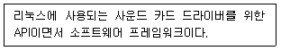
- IPP
- ALSA
- CUPS
- XSANE
(정답률: 24%)
33. 다음 설명에 해당하는 명령으로 알맞은 것은
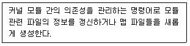
- depmod
- insmod
- rmmod
- modprobe
(정답률: 13%)
34. 다음 중 CentOS 7에서 사용되는 리눅스 커널의 모듈 파일 형식으로 알맞은 것은?
- e1000e.o
- e1000e.so
- e1000e.ko
- e1000e.mo
(정답률: 17%)
35. 다음 중 LVM을 구성하는 순서에 대한 설명으로 알맞은 것은?
- 볼륨 그룹을 구성한 후에 물리적 볼륨, 논리적 볼륨 순으로 구성한다.
- 볼륨 그룹을 구성한 후에 논리적 불륨, 물리적 볼륨 순으로 구성한다.
- 물리적 볼륨, 논리적 볼륨을 생성한 후에 볼륨 그룹을 구성한다.
- 물리적 볼륨을 생성한 후에 볼륨 그룹을 구성하고 논리적 볼륨을 생성한다.
(정답률: 20%)
36. 다음은 Raid 장치를 테스트 하기 위해 일부 장치를 강제적으로 오류를 발생시키는 과정이다. ( 괄호 ) 안에 들어갈 내용으로 알맞은 것은?
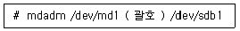
- -d
- -D
- -f
- -F
(정답률: 13%)
37. 커널 컴파일 과정 중 make menuconfig 명령을 이용해서 여러 가지를 설정을 끝낸 후에 저장하였다. 다음 중 관련 작업 후 커널 소스 디렉터리에 생성되는 파일명으로 알맞은 것은?
- Makefile
- .config
- Kconfig
- configure
(정답률: 17%)
38. 다음 중 커널 컴파일의 순서로 알맞은 것은?
- make menuconfig → make mrproper → make bzImage
- make menuconfig → make bzImager → make mrproper
- make mrproper → make menuconfig → make bzImage
- make bzImage → make menuconfig → make mrproper
(정답률: 10%)
39. 다음 중 리눅스 커널이 속해있는 커널의 종류로 가장 알맞은 것은?
- 단일형 커널(monolithic kernel)
- 마이크로커널(microkernel)
- 혼합형 커널(hybrid kernel)
- 나노커널(nanokernel)
(정답률: 20%)
40. 다음은 약 20GB 용량의 논리적 볼륨을 생성하는 과정이다. ( 괄호 ) 안에 들어갈 내용으로 알맞은 것은?
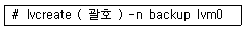
- -s 20G
- -S 20G
- -l 20G
- -L 20G
(정답률: 20%)
41. 다음 설명에 가장 적합한 명령으로 알맞은 것은?
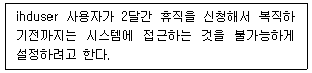
- passwd -r ihduser
- passwd -l ihduser
- passwd -d ihduser
- passwd -u ihduser
(정답률: 10%)
42. 갑자스러운 시스템 점검으로 인해서 시스템에 로그인한 사용자 모두에게 긴급하게 메시지를 전달하려고 한다. 다음 ( 괄호 ) 안에 들어갈 명령으로 알맞은 것은?
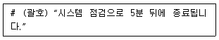
- mesg
- wall
- write
(정답률: 17%)
43. 사용자에 대한 디스크 쿼터를 설정하려고 한다. 다음 중 /etc/fstab 파일에 설정해야 할 옵션값으로 알맞은 것은?(문제 오류로 가답안 발표시 2번으로 발표되었지만 확정답안 발표시 1, 2번이 정답 처리 되었습니다. 여기서는 가답안인 2번을 누르면 정답 처리 됩니다.)
- quota
- uquota
- gquota
- edquota
(정답률: 30%)
44. 다음 중 등록된 cron 관련 파일을 제거하는 명령으로 알맞은 것은?
- crontab -e
- crontab -d
- crontab -l
- crontab -r
(정답률: 24%)
45. 다음 중 특정 명령이나 작업을 예약된 시간에 실행할 때 사용하는 명령어로 알맞은 것은?
- at
- atq
- atrm
- atc
(정답률: 24%)
46. 다음은 httpd 프로세스를 모두 종료시키는 과정이다. (괄호) 안에 들어갈 명령어로 알맞은 것은?
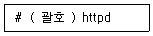
- kill
- pgrep
- pkill
- nohup
(정답률: 23%)
47. 다음 명령의 결과에 대한 설명으로 알맞은 것은?
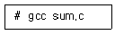
- 'a.out‘이라는 실행 파일이 생성된다.
- 'sum‘이라는 실행 파일이 생성된다.
- 'a.out‘이라는 오브젝트 파일이 생성된다.
- 'sum.o‘이라는 오브젝트 파일이 생성된다.
(정답률: 17%)
48. 다음은 현재 디렉토리 안에 있는 backup 디렉토리를 bzip2 압축 명령을 이용해서 tar로 묶는 과정이다. ( 괄호 ) 안에 들어갈 내용으로 알맞은 것은?
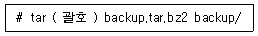
- jxvf
- Jxvf
- jcvf
- Jcvf
(정답률: 26%)
49. 다음 중 root 계정에 대한 보안을 강화하는 조치로 틀린 것은?
- root계정 이외에 UID가 0인 계정이 없도록 관리한다.
- PAM을 이용해서 root 계정으로 접근하는 서비스를 제어한다.
- 일반사용자들에게 sudo 보다는 su 명령을 이용하도록 한다.
- 환경변수인 TMOUT를 이용해서 무의미하게 장시간 로그인되어 있는 것을 막는다.
(정답률: 30%)
50. 다음 설명에 해당하는 파일명으로 알맞은 것은?
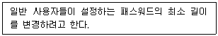
- /etc/skel
- /etc/passwd
- /etc/login.defs
- /etc/default/useradd
(정답률: 30%)
51. 명령의 결과가 다음과 같은 경우 관련 설명으로 틀린 것은?
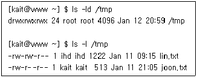
- kait 사용자는 /tmp 디렉토리 안으로 들어갈 수 있다.
- kait 사용자는 /tmp 디렉토리 안에 파일을 생성할 수 있다.
- kait 사용자는 lin.txt 파일을 삭제할 수 있다.
- kait 사용자는 joon.txt 파일을 수정할 수 없다.
(정답률: 20%)
52. 명령의 결과가 다음과 같은 경우에 실행되지 않는 명령으로 알맞은 것은?
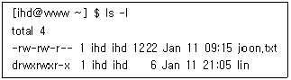
- ln joon.txt j
- ln -s joon.txt j.txt
- ln lin 11
- ln -s lin 1
(정답률: 24%)
53. 다음 설명에 해당하는 명령어로 알맞은 것은?
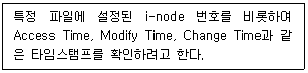
- ls
- touch
- stat
- file
(정답률: 23%)
54. 다음 중 프로세스 우선순위와 관련된 설명으로 틀린 것은?
- 프로세스 우선순위와 관련된 항목에는 PRI와 NI가 있다.
- 명령어를 이용해서 우선순위를 조정할 때 사용하는 항목이 NI이다.
- NI에 설정하는 값의 범위는 -19~20이다.
- 프로세스 우선순위를 변경하는 명령어에는 nice, renice, top 이 있다.
(정답률: 17%)
55. 월, 수, 금요일 오후 4시 30분에 백업 스크립트가 동작하도록 cron을 설정하는 과정이다. 다음 ( 괄호 ) 안에 들어갈 내용으로 알맞은 것은?
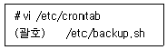
- 4 30 * * 1,3,5
- 30 4 * * 1,3,5
- 16 30 * * 1,3,5
- 30 16 * * 1,3,5
(정답률: 30%)
56. 다음 중 레드햇 리눅스의 패키지 관리 기법으로 가장 거리가 먼 것은?
- rpm
- yum
- dnf
- pacman
(정답률: 27%)
57. 다음 중 yum 명령에서 bind라는 문자열이 들어 있는 패키지들을 찾는 명령으로 알맞은 것은?
- yum search bind
- yum info bind
- yum list bind
- yum seek bind
(정답률: 25%)
58. 다음은 ls 명령어가 의존하고 있는 공유 라이브러리 정보를 확인하는 과정이다. ( 괄호 ) 안에 들어갈 명령어로 알맞은 것은?
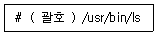
- rpm
- ldd
- ldconfig
- yum
(정답률: 13%)
59. 다음은 /etc/passwd 파일 내용에서 필드 구분을 ‘:’으로 지정하고, 첫 번째 필드값과 세 번째 필드값을 추출해서 출력하는 과정이다. ( 괄호 ) 안에 들어갈 명령어로 알맞은 것은?
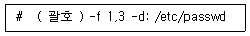
- tr
- cut
- awk
- sed
(정답률: 27%)
60. 다음 중 CentOS 7 버전 리눅스에서 그룹 패스워드에 적용되는 해시 알고리즘으로 알맞은 것은?
- DES
- MD5
- SHA-256
- SHA-512
(정답률: 20%)
3과목: 네트워크 및 서비스의 활용
61. iptables 명령을 이용해서 직접 방화벽 규칙(rule)을 설정하려고 한다. 다음 중 동적 방화벽인 firewalld의 동작을 중지시키는 명령으로 알맞은 것은?
- systemctl firewall-cmd stop
- systemctl stop firewall-cmd
- systemctl firewalld stop
- systemctl stop firewalld
(정답률: 30%)
62. 다음 설명에 해당하는 DoS 공격으로 가장 알맞은 것은?
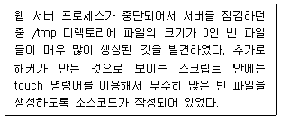
- 가용 디스크 고갈
- 가용 I-node 고갈
- 가용 메모리 자원 고갈
- 가용 프로세스 자원 고갈
(정답률: 23%)
63. 다음 설명에 해당하는 iptables 관련 명령으로 알맞은 것은?
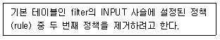
- iptables -F INPUT 2
- iptables -F INPUT --line-number 2
- iptables -D INPUT 2
- iptables -D INPUT -line-number 2
(정답률: 14%)
64. 다음 설명에 해당하는 Dos(Denial of Service)공격으로 알맞은 것은?
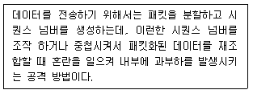
- Teardrop Attack
- Land Attack
- Smurf Attack
- Death Attack
(정답률: 20%)
65. 다음 중 iptables의 nat 테이블에 존재하는 사슬명으로 틀린 것은?
- INPUT
- OUTPUT
- FORWARD
- PREROUTING
(정답률: 17%)
66. 다음 중 웹클라이언트가 접근이 금지된 페이지를 요청했을 때 웹 서버에 기록되는 상태 코드 번호로 알맞은 것은?
- 200
- 400
- 403
- 404
(정답률: 22%)
67. 다음 중 아파치 웹 서버 주 환경 설정 파일에서 웹 서버의 도메인명이나 IP 주소를 기입하는 항목으로 알맞은 것은?
- ServerAdmin
- ServerName
- DirectoryIndex
- ServerRoot
(정답률: 30%)
68. 다음( 괄호 ) 안에 들어갈 명령어로 알맞은 것은?
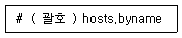
- ypbind
- ypwhich
- ypcat
- nisdomainname
(정답률: 17%)
69. CentOS 7에서 NIS 서버를 사용하기 위해서는 systemctl 명령을 이용해서 RPC 관련 데몬을 먼저 실행해야 한다. 다음 중 관련 데몬을 실행하는 명령으로 알맞은 것은?
- rpcbind
- ypserv
- ypbind
- prtmap
(정답률: 29%)
70. 다음 설명에 해당하는 프로그램으로 알맞은 것은?
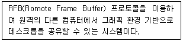
- PROXY
- NTP
- VNC
- DHCP
(정답률: 27%)
71. 다음 중 DHCP 서버 환경 설정 파일에서 클라이언트에게 할당할 IP 주소 대역을 기입하는 항목으로 알맞은 것은?
- range
- fixed-address
- option routers
- option broadcast-address
(정답률: 20%)
72. 다음중 가상 머신을 사용하기 위해서 실행시켜야 하는 데몬명으로 알맞은 것은?
- libvirt
- libvirtd
- virt-manager
- virt-top
(정답률: 26%)
73. 다음 중 가상화 방식이 나머지 셋과 다른 것은?
- Docker
- VMware Workstation
- VirtualBox
- Hyper-V
(정답률: 34%)
74. 다음 중 IPv6 기반 주소를 기입할 때 사용하는 Zone 파일의 레코드 타입으로 알맞은 것은?
- A
- AA
- AAAA
- NS
(정답률: 30%)
75. 다음 중 DNS 서버 프로그램인 bind를 배포하고 관리하는 기관명으로 알맞은 것은?
- ISO
- ISC
- W3C
- IEEE
(정답률: 20%)
76. 다음 중 /etc/aliases 파일 설정 후에 변경된 내용을 적용시킬 때 사용하는 명령어로 알맞은 것은?
- makemap
- mailq
- newaliases
- m4
(정답률: 14%)
77. 다음 설명에 해당하는 메일 관련 프로그램으로 알맞은 것은?
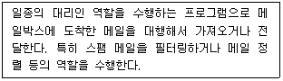
- postfix
- qmail
- procmail
- evolution
(정답률: 17%)
78. 다음 설명에 해당하는 설정값으로 알맞은 것은 ?
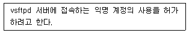
- local_enable=NO
- local_enable=YES
- anonymous_enable=NO
- anonymous_enable=YES
(정답률: 30%)
79. 다음 그림에 해당하는 명령어로 알맞은 것은?
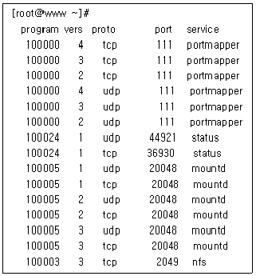
- rpcbind
- rpcinfo
- portmap
- exportfs
(정답률: 14%)
80. 다음은 NTP 서버의 환경 설정 파일에서 기준이 되는 NTP 서버를 지정하는 과정이다. ( 괄호 ) 안에 들어갈 내용으로 알맞은 것은?
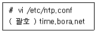
- date
- rdate
- server
- ntpdate
(정답률: 20%)
81. 다음 ( 괄호 ) 안에 들어갈 내용으로 알맞은 것은?
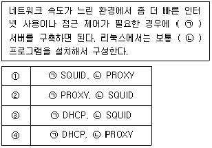
- ①
- ②
- ③
- ④
(정답률: 20%)
82. 다음 중 CentOS 7에서 TCP Wrapper를 이용해서 접근 제어가 가능한 서비스로 알맞은 것은?
- ssh
- samba
- telnet
- gdm
(정답률: 24%)
83. 다음 설명의 경우에 선택해야 하는 가상화 기술로 알맞은 것은?
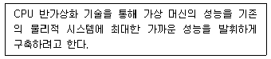
- KVM
- Xen
- Ansible
- Docker
(정답률: 17%)
84. 다음 설명에 해당하는 용어로 알맞은 것은?
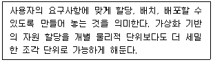
- Insulation
- Provisioning
- Emulation
- Aggregation
(정답률: 10%)
85. 다음은 Zone 파일의 설정 내용 중 일부이다. ( 괄호 ) 안에 들어갈 내용으로 알맞은 것은?
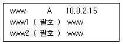
- MX
- NS
- CNAME
- PTR
(정답률: 17%)
86. 다음은 DNS 서버의 환경 설정 파일 중에 일부로 IP 주소가 10.0.2.15이고 도메인이 ihd.or.kr인 시스템에 역(Reverse) 존 파일을 설정하는 과정이다. (괄호) 안에 들어갈 내용으로 알맞은 것은?
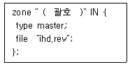
- 10.0.2.15
- 15.2.0.10
- 10.0.2.in-addr.arpa
- 2.0.10.in-addr.arpa
(정답률: 10%)
87. 다음 (괄호) 안에 들어갈 메일 관련 파일로 알맞은 것은?
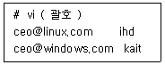
- /etc/mail/access
- /etc/mail/local-host-names
- /etc/aliases
- /etc/mail/virtusertable
(정답률: 7%)
88. 다음 설명에 해당하는 메일 관련 파일로 알맞은 것은?
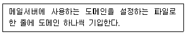
- /etc/mail/access
- /etc/mail/local-host-names
- /etc/aliases
- /etc/mail/virtusertable
(정답률: 20%)
89. 다음 (괄호) 안에 들어갈 내용으로 알맞은 것은?
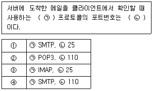
- ①
- ②
- ③
- ④
(정답률: 17%)
90. 다음은 삼바 서버에 접근할 수 있는 특정호스트를 지정하는 과정이다. (괄호) 안에 들어갈 내용으로 알맞은 것은?
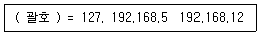
- path
- workgroup
- security
- hosts allow
(정답률: 23%)
91. 다음 설명에 해당하는 NFS 서버 설정 옵션으로 알맞은 것은?
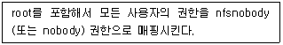
- all_squash
- no_all_squach
- root_squash
- no_root_squash
(정답률: 13%)
92. 다음 중 NIS 서버에서 맵 파일이 생성되는 기본 디렉토리로 알맞은 것은?
- /etc/yp
- /var/yp
- /etc/ypserv
- /var/ypserv
(정답률: 13%)
93. 다음중 이름과 성의 조합을 나타내는 LDAP 속성 키워드로 알맞은 것은?
- cn
- sn
- givenName
- dc
(정답률: 17%)
94. 다음 (괄호) 안에 들어갈 내용으로 알맞은 것은?
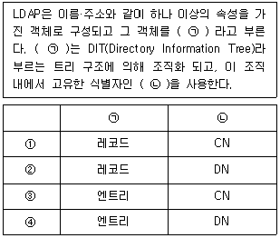
- ①
- ②
- ③
- ④
(정답률: 17%)
95. 다음은 PHP 소스 설치 후에 관련 함수로 테스트하는 프로그램을 작성하는 과정이다. (괄호) 안에 들어갈 내용으로 알맞은 것은?
- test();
- testinfo();
- testphp();
- phpinfo();
(정답률: 30%)
96. 다음은 아파치 웹 서버를 소스 설치하는 과정이다. (괄호) 안에 들어갈 내용으로 알맞은 것은?
- --ServerDirectory
- --prefix
- --Directory
- --DocumentRoot
(정답률: 24%)
97. 다음 설명에 해당하는 용어로 알맞은 것은?
- IPC
- D-bus
- cgroups
- LXC
(정답률: 14%)
98. 다음은 DNS 서버의 환경 설정 파일 중에 일부이다. (괄호) 안에 들어갈 내용으로 알맞은 것은?
- acl
- zone
- allow-transfer
- forwarders
(정답률: 10%)
99. 다음은 리눅스 시스템에서 IP주소가 192.168.5.13 인 윈도우 시스템에 공유된 디렉터리를 마운트하는 과정이다. (괄호) 안에 들어갈 삼바관련 명령으로 알맞은 것은?
- smbmount
- mount.cifs
- smbstatus
- smbclient
(정답률: 14%)
100. 다음은 소스 파일을 이용해서 설치한 MySQL 5.7 버전을 설치한 이후에 기본관리 데이터 베이스인 mysql 등을 생성하는 과정이다. (괄호) 안에 들어갈 내용으로 알맞은 것은?
- ./mysql
- ./mysqld
- ./mysqladmin
- .mysql_install_db
(정답률: 17%)